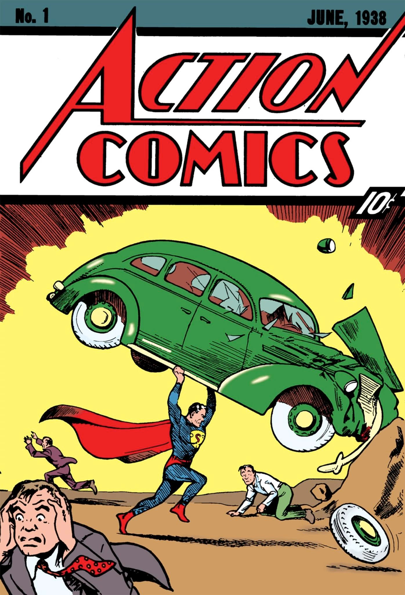

HISTÓRIA
ATENÇÃO: ALERTA DE SPOILER
Quem é fã dos quadrinhos deve estar habituado a ouvir a expressão DC Comics, mas nem todos sabem exatamente o seu significado mais profundo. A DC é uma editora dos EUA especializada na edição de histórias em quadrinhos, englobando também todos os veículos referentes à crítica e divulgação deste gênero narrativo. Esta editora é um desdobramento da poderosa empresa Time Warner, a maior companhia da área de entretenimento, que inclui Internet, edições, filmes, TV e telecomunicação. A DC Comics tem em sua posse os direitos intelectuais de alguns dos mais renomados personagens das histórias em quadrinhos dos Estados Unidos. Entre eles constam os heróis Superman, Batman, Mulher-Maravilha, Aquaman, e os grupos aos quais eles pertencem, como Liga da Justiça da América, Novos Titãs, Patrulha do Destino, Legião dos Super-Heróis, e outros mais. Há várias décadas a DC vem se consolidando como um dos ramos empresariais norte-americanos mais fortes na área dos quadrinhos, competindo acirradamente com a Marvel Comics, sua maior adversária. Inicialmente ela era chamada de National Comics, mas posteriormente assumiu a sigla que se referia a uma de suas mais famosas publicações, a Detective Comics, que entre outras criações trazia em suas páginas as aventuras do Batman.
A moderna DC é uma junção de várias sociedades. A primeira revista criada foi a More Fun Comics/Fun: The Big Comic Magazine, em 1935, depois transformada em New Fun e More Fun. Destacava-se então um personagem conhecido como Dr. Oculto. A segunda publicação veio em 1935, quando Wheeler-Nicholson lançou a New Comics, que deu início à Era de Ouro das histórias em quadrinhos norte-americanas. A terceira criação foi a Detective Comics, que nasceu em 1937. Neste mesmo ano a empresa adotou o nome desta revista, batizando-se assim como Detective Comics, Inc. Em 1944 ela se uniu à National Allied Publications, responsável pela edição da Action Comics, na qual o Superman apareceu pela primeira vez. Com esta fusão o conglomerado empresarial passou a ser conhecido como National Comics, embora fosse informalmente denominado DC Comics, até este título ser oficialmente assumido.
Com o aparecimento de Superman no mercado, as vendas das publicações da DC Comics foram às alturas, dando início à conhecida era de ouro das histórias em quadrinhos. Assim estimulada, a empresa incentivou a criação de outros super-heróis, dando espaço para Batman, Mulher-Maravilha e para a Sociedade da Justiça da América. Com a queda do sucesso destes personagens, no final da década de 40, esta editora deu origem a outros estilos, tais como a ficção científica, os faroestes, a vertente do humor e o romance.
Na chamada era de prata alguns antigos personagens receberam retoques e maquiagens que os transformaram em heróis mais modernos, como os novos The Flash e Lanterna Verde, entre outros, em meados dos anos 50. A intenção desta adaptação era apagar as raízes místicas destes seres fictícios e torná-los mais concretos e condizentes com os tempos atuais. Outros artistas talentosos ingressaram nas fileiras da DC, com o objetivo de não perder espaço no mercado para a Marvel.
Nos anos 70 e 80 a DC Comics iniciou uma nova empreitada, a introdução das mini-séries em suas publicações, o que lhe garantia a possibilidade de tornar as sequências de suas histórias mais maleáveis. Esta modalidade permite criar narrativas que revelam as origens de personagens novos, principalmente os recém-surgidos nas publicações mais recentes, como Os Novos Titãs, parceria do autor Marv Wolfman e do artista Georfe Pérez. Novas experiências foram empreendidas nos anos 90, mas o sucesso foi instável; ao que parece os leitores não aceitaram bem eventos como a morte do Super Homem e o aleijamento do Batman. A DC Comics passou a publicar também as famosas graphic novels, entre elas Estrada para Perdição, vertida para os cinemas e protagonizada por Paul Newman. A prioridade da editora foi a linha elaborada pelo inglês Alan Moore, que entre outros personagens deu à luz Promethea e League of Extraordinary Gentleman. Na década seguinte a DC publicou a extensa série fantástica conhecida como Elfquest, em 2003. Um ano depois passou a lançar também mangás vertidos para a língua inglesa e graphics novels da Europa. Em 2006 a série All-Star dá margem para que os melhores criadores dos quadrinhos – entre eles Frank Miller, Jim Lee e Grant Morrison – narrem suas próprias visões dos famosos super-heróis.